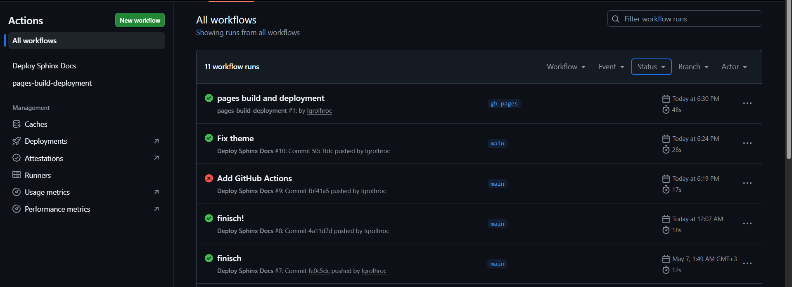

Розділ 2
ПРОЕКТУВАННЯ СИСТЕМИ АВТОМАТИЗОВАНОЇ ПІДГОТОВКИ ДОКУМЕНТІВ
2.1. Архітектура взаємодії Sphinx, Git та хмарних сервісів
Проектування системи автоматизованої підготовки документації передбачає визначення взаємодії між локальним середовищем розробки, системою контролю версій та хмарною інфраструктурою. У межах даної роботи реалізована архітектура, що поєднує Sphinx, Git, GitHub Actions та GitHub Pages в єдиний CI/CD-конвеєр. Такий підхід забезпечує автоматичне збирання, перевірку та публікацію документації після кожного оновлення репозиторію.
Основою системи є локальне середовище розробника, у якому створюється та редагується документація у форматі Markdown із використанням MyST Parser. Генерація документації здійснюється за допомогою Sphinx, який виконує перетворення текстових файлів у статичний HTML-сайт. Для локального тестування використовується віртуальне середовище Python та інструмент sphinx-autobuild, що дозволяє автоматично оновлювати сторінки під час редагування документації.
Система Git використовується для контролю версій та синхронізації змін між локальним середовищем і віддаленим репозиторієм GitHub. Кожна зміна документації фіксується у вигляді комітів, що дозволяє відстежувати історію редагування та забезпечує можливість колективної роботи над проєктом. Леонард Сміт зазначає, що використання розподілених систем контролю версій підвищує надійність і стійкість документаційних систем 23.
Після виконання команди git push зміни передаються до репозиторію GitHub. На цьому етапі запускається механізм GitHub Actions, який виконує роль системи безперервної інтеграції. GitHub автоматично створює тимчасове середовище виконання (runner), у якому відбувається встановлення Python-залежностей та запуск процесу збірки документації. Джеремі Хьюз підкреслює, що автоматизація процесу збірки дозволяє забезпечити однаковий результат незалежно від локальних налаштувань користувача 24.

Рис.2.1- Архітектура взаємодії Sphinx, Git та хмарних сервісів
Під час виконання workflow GitHub Actions встановлює Sphinx, MyST Parser та інші необхідні розширення через менеджер пакетів pip. Після цього виконується команда генерації HTML-документації. У разі виникнення помилок збірка автоматично зупиняється, а користувач отримує повідомлення про проблему. Марк Річардс зазначає, що оперативний зворотний зв’язок є одним із ключових принципів CI/CD-систем 26.
Після успішного завершення збірки готові HTML-файли автоматично публікуються через GitHub Pages. Для цього використовується окрема службова гілка або вбудований механізм GitHub Pages Deployments. У результаті документація стає доступною за постійною URL-адресою без необхідності ручного завантаження файлів на сервер. Браян Трейсі підкреслює, що використання статичного хостингу забезпечує високу швидкість завантаження та спрощує підтримку веб-документації 27.
Важливою складовою архітектури є інтеграція Sphinx із Python-проєктом через розширення autodoc. Під час збірки документації Sphinx може автоматично імпортувати модулі Python та формувати API-документацію на основі docstrings. Для коректної роботи цього механізму необхідно налаштувати шляхи імпорту у конфігураційному файлі conf.py. Луїс Коул зазначає, що правильна інтеграція документації та вихідного коду є важливим елементом сучасної автоматизованої архітектури 27.
Архітектура також передбачає використання тригерів GitHub Actions. У межах даного проєкту workflow запускається після:
• оновлення головної гілки репозиторію;
• створення Pull Request;
• ручного запуску workflow через інтерфейс GitHub.
Такий підхід дозволяє автоматично перевіряти документацію перед об’єднанням змін у основну гілку проєкту.
Для діагностики помилок використовується система логування GitHub Actions. Усі етапи виконання workflow зберігаються у вигляді журналів, що дозволяє аналізувати причини помилок збірки або проблем із залежностями. Це спрощує підтримку системи та дозволяє швидко локалізувати помилки конфігурації.
Додатково архітектура підтримує інтеграцію з іншими інструментами перевірки документації, зокрема:
• перевіркою коректності посилань;
• лінтерами Markdown;
• перевіркою структури документації;
• генерацією Mermaid-діаграм.
Модульна структура GitHub Actions дозволяє легко додавати нові етапи автоматизації без зміни основної логіки системи. Для забезпечення безпеки використовуються секретні змінні GitHub Secrets, у яких можуть зберігатися токени доступу або інші конфіденційні параметри. Це відповідає сучасним практикам безпечної роботи з CI/CD-сервісами та відкритими репозиторіями. Запропонована архітектура є масштабованою та не потребує окремого серверного обладнання, оскільки всі процеси виконуються у хмарній інфраструктурі GitHub. Це дозволяє використовувати систему як для індивідуальних студентських робіт, так і для командних навчальних проєктів.
Отже, архітектура взаємодії Sphinx, Git та хмарних сервісів забезпечує повністю автоматизований цикл підготовки документації: від редагування тексту до публікації готового веб-сайту. Поєднання Sphinx, GitHub Actions та GitHub Pages дозволяє реалізувати сучасний підхід Documentation as Code та інтегрувати документацію у повноцінний CI/CD-процес.
2.2. Можливості Sphinx для Python-проектів: autodoc, intersphinx та розширення
Однією з головних переваг Sphinx є глибока інтеграція з мовою Python та підтримка великої кількості розширень для автоматизації документації. У межах даного проєкту Sphinx використовується не лише як генератор HTML-сторінок, а як повноцінна система керування технічною документацією. Основу його функціональності складають розширення autodoc, intersphinx, napoleon та інші модулі, що забезпечують автоматичне формування API-документації, створення перехресних посилань і підтримку сучасних форматів розмітки.
Ключовим компонентом системи є розширення autodoc, яке дозволяє автоматично генерувати документацію безпосередньо з вихідного коду Python. Sphinx аналізує docstrings функцій, класів та модулів і формує структурований опис API без необхідності ручного дублювання інформації. Такий підхід реалізує принцип єдиного джерела істини, коли актуальність документації напряму залежить від якості коментарів у коді. Патрік Кеннеді зазначає, що автоматичне генерування документації суттєво скорочує час підтримки технічних описів та зменшує кількість застарілої інформації 29.
Розширення autodoc підтримує автоматичне відображення:
• функцій;
• класів;
• методів;
• модулів;
• анотацій типів;
• параметрів та значень, що повертаються.
Це особливо важливо для великих Python-проєктів, де ручне оновлення документації стає складним і неефективним. Джулія Еванс підкреслює, що використання autodoc є одним із базових стандартів сучасної API-документації 30.
Важливим доповненням є розширення intersphinx, яке дозволяє створювати перехресні посилання на зовнішню документацію інших Python-проєктів. У межах системи можна напряму посилатися на офіційну документацію Python, бібліотек NumPy, Django або інших фреймворків. Під час збірки Sphinx автоматично завантажує спеціальні index-файли (inventory files) і використовує їх для формування зовнішніх посилань. Це покращує навігацію та створює єдину інформаційну екосистему для користувача. Саймон Віллісон зазначає, що подібна система зв’язків значно підвищує семантичну цілісність технічної документації 31.
Для підтримки сучасних стилів оформлення docstrings використовується розширення napoleon. Воно додає підтримку форматів Google Style та NumPy Style, які є популярними у Python-спільноті. Завдяки цьому документація стає більш читабельною та компактною, а Sphinx автоматично перетворює такі описи у структуровані HTML-блоки. Це особливо корисно для проєктів у сфері аналізу даних та машинного навчання, де стиль NumPy фактично став стандартом 32.

Рис.2.2-Можливості Sphinx для Python-проектів: autodoc, intersphinx та розширення
Для побудови схем та графічних структур у документації використовується розширення graphviz. Воно дозволяє генерувати діаграми безпосередньо з текстового опису мовою DOT. У результаті можна автоматично створювати:
• діаграми наслідування;
• схеми модулів;
• блок-схеми алгоритмів;
• графи взаємодії компонентів.
Перевагою такого підходу є те, що діаграми генеруються автоматично під час збірки та завжди відповідають актуальному стану проєкту.
У процесі розробки документації використовується також розширення todo, яке дозволяє залишати службові позначки про необхідність доопрацювання окремих розділів. Усі такі елементи можуть автоматично збиратися в окремий список завдань. Це спрощує організацію роботи над документацією та дозволяє контролювати ступінь готовності матеріалів. Томас Клаппер зазначає, що інтеграція TODO-механізмів у документацію підвищує ефективність командної роботи 33.
Для перевірки працездатності прикладів коду використовується модуль doctest. Він автоматично виконує фрагменти Python-коду, вбудовані в документацію, та порівнює результат із очікуваним значенням. Такий механізм дозволяє уникати появи застарілих або неробочих прикладів у технічних матеріалах. Елен Ульман підкреслює, що автоматична перевірка прикладів є важливим елементом якісної документації 34.
У межах даного проєкту значну роль відіграє підтримка математичних формул через розширення mathjax. Воно забезпечує коректне відображення формул LaTeX безпосередньо у веб-браузері. Це дозволяє використовувати математичні вирази при описі алгоритмів, структур даних та аналітичних моделей без необхідності створення окремих графічних зображень.
Для підтримки багатомовності Sphinx використовує механізм gettext, який дозволяє створювати локалізовані версії документації. Система автоматично генерує шаблони перекладу та синхронізує їх зі змінами в основній документації. Такий підхід є корисним для міжнародних проєктів або двомовних навчальних матеріалів.
Архітектура Sphinx також дозволяє створювати власні розширення мовою Python. Це дає можливість адаптувати систему під специфічні потреби проєкту, наприклад:
• інтегрувати зовнішні сервіси;
• генерувати спеціалізовані звіти;
• створювати власні директиви;
• додавати нові типи контенту.
Гнучкість системи розширень робить Sphinx придатним як для невеликих навчальних проєктів, так і для великих технічних платформ. Для оформлення документації у проєкті використовується тема Read the Docs через пакет sphinx_rtd_theme. Вона забезпечує адаптивний інтерфейс, багаторівневу навігацію та вбудований пошук по документації. Використання готової теми дозволяє отримати професійний вигляд документації без необхідності створення власного дизайну.
Усі розширення інтегруються в автоматизований CI/CD-конвеєр через GitHub Actions. Під час кожної збірки workflow автоматично встановлює необхідні залежності, запускає Sphinx та генерує фінальну версію сайту документації. Це забезпечує стабільність результату та мінімізує ручні операції з боку користувача.
Отже, можливості Sphinx для Python-проєктів значно виходять за межі звичайної генерації HTML-сторінок. Завдяки розширенням autodoc, intersphinx, napoleon та іншим модулям система дозволяє створювати повноцінну інтерактивну базу знань, інтегровану з вихідним кодом проєкту. Такий підхід забезпечує автоматизацію підготовки документації, підтримку актуальності контенту та відповідність сучасним практикам Documentation as Code.
2.3. Механізми автоматизації GitHub Actions: події (triggers), робочі процеси (workflows) та оточення (runners)
GitHub Actions є платформою автоматизації, інтегрованою безпосередньо в екосистему GitHub, що дозволяє реалізувати процеси CI/CD для програмних проєктів та документації. Основу системи становлять три ключові компоненти: події (triggers), робочі процеси (workflows) та виконавчі середовища (runners). Події визначають умови запуску автоматизації, workflows описують послідовність дій у форматі YAML, а runners забезпечують виконання сценаріїв у ізольованому середовищі. Така архітектура дозволяє автоматизувати збирання, перевірку та публікацію документації без участі користувача 35.
Для автоматизації документації Sphinx найчастіше використовуються події push та pull_request. Подія push запускає workflow після внесення змін до репозиторію, що забезпечує автоматичне оновлення документації після кожного коміту. Подія pull_request використовується для перевірки коректності збирання перед об’єднанням змін з основною гілкою проєкту. Додатково GitHub Actions підтримує запуск процесів за розкладом (schedule) або через зовнішні API запити, що розширює можливості інтеграції автоматизації в навчальні та DevOps процеси 36.
Робочі процеси GitHub Actions зберігаються у каталозі .github/workflows та описуються у форматі YAML. Один workflow може містити кілька завдань (jobs), які виконуються послідовно або паралельно. Для проєктів на базі Sphinx типовий workflow включає налаштування Python середовища, встановлення залежностей, запуск генерації HTML документації та її подальшу публікацію. Такий підхід дозволяє централізувати весь процес підготовки документації в одному конфігураційному файлі 37.
Оточення runners є віртуальними машинами або контейнерами, на яких виконуються workflow. GitHub надає готові середовища на базі Ubuntu, Windows та macOS. У межах даної роботи використовувалось середовище ubuntu-latest, оскільки воно забезпечує швидке встановлення Python-залежностей та сумісність із Sphinx і MyST Parser. Кожен запуск workflow виконується у чистому середовищі, що гарантує повторюваність результатів та відсутність конфліктів між різними версіями залежностей 38.
{kind=link}

Рис.2.3- Механізми автоматизації GitHub Actions: події (triggers), робочі процеси (workflows) та оточення (runners)
Важливою складовою GitHub Actions є використання готових дій (actions) із офіційного Marketplace. Для Python-проєктів однією з основних є дія actions/setup-python, яка автоматизує встановлення необхідної версії Python та підтримує кешування пакетів pip. Використання готових дій дозволяє скоротити обсяг службового коду та спрощує підтримку workflow 39.
Для прискорення процесу збирання GitHub Actions підтримує механізми кешування залежностей. У випадку Sphinx-проєктів кешування використовується для збереження встановлених Python-бібліотек між запусками workflow. Це дозволяє уникнути повторного завантаження пакетів при кожному запуску та значно скорочує час автоматичного збирання документації 27.
Важливим елементом автоматизації є підтримка секретів репозиторію (Secrets). GitHub Actions дозволяє безпечно передавати токени доступу та інші конфіденційні параметри без їх збереження у відкритому коді. У даному проєкті механізми GitHub Pages використовуються без окремих зовнішніх ключів доступу, однак підтримка секретів залишається важливою для масштабування CI/CD процесів та інтеграції із зовнішніми сервісами 40.
Для документації Sphinx workflow може включати додаткові перевірки якості, зокрема запуск linkcheck для пошуку некоректних внутрішніх і зовнішніх посилань. Автоматична перевірка дозволяє виявляти помилки ще до публікації документації та підтримувати актуальність навігації між сторінками. Такий підхід підвищує якість технічної документації та зменшує кількість помилок у фінальній публікації.
GitHub Actions також надає детальні журнали виконання workflow. Кожен етап збирання супроводжується консольним виводом, що дозволяє швидко локалізувати помилки конфігурації, проблеми із залежностями або некоректний синтаксис Markdown чи MyST Parser. Наявність журналів виконання значно спрощує налагодження автоматизованих процесів навіть для користувачів без значного досвіду DevOps.
Для забезпечення сумісності документації з різними версіями Python GitHub Actions підтримує матричні збірки (matrix strategy). Це дозволяє одночасно запускати workflow у кількох конфігураціях середовища. Хоча у межах даної роботи використовується одна стабільна версія Python, підтримка матричних збірок є важливою можливістю для масштабування проєкту та тестування сумісності у майбутньому.
Автоматизація GitHub Actions інтегрується з GitHub Pages, що дозволяє реалізувати повний цикл безперервної доставки документації. Після успішного завершення workflow згенеровані HTML-сторінки автоматично публікуються на вебсайті документації. У результаті будь-які зміни Markdown-файлів миттєво проходять через етапи перевірки, збирання та розгортання без ручного втручання користувача.
У результаті використання GitHub Actions формується централізована система автоматизованої підготовки документації, що відповідає концепції Documentation as Code. Інтеграція GitHub Actions із Sphinx, MyST Parser та GitHub Pages забезпечує автоматичне збирання, контроль якості та безперервну публікацію документації в межах єдиного CI/CD конвеєра. Отримані результати підтверджують ефективність використання сучасних засобів автоматизації для підготовки навчальної технічної документації.